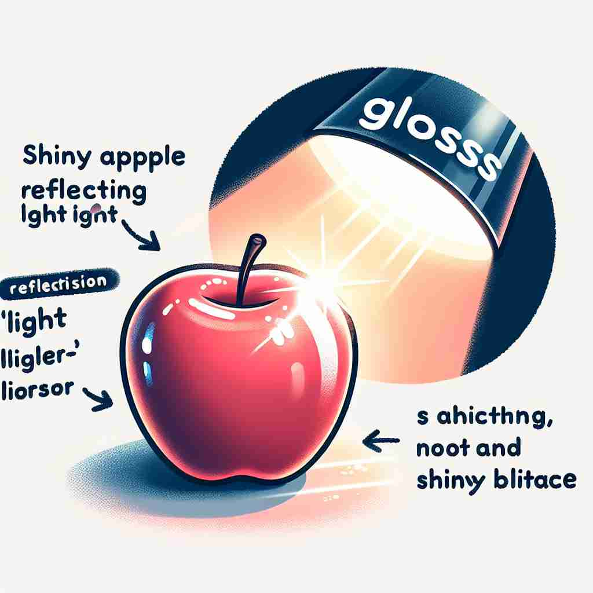

💬 The bright apple gloss makes it look delicious.

💬 The glossy magazine cover makes the apple look even more attractive.
🔈 [glɒs]
🗝️ n. a smooth, shiny surface or appearance
🖼️ 在一家豪华汽车展销会中，一位销售员向顾客展示一辆崭新的跑车。车身在聚光灯下熠熠生辉，表面光滑如镜，完美地体现了'gloss'作为一种光滑而有光泽的外观。
🔍 想象'gloss'是一层光滑闪亮的表面。这个核心概念贯穿了所有含义：物理上的光亮表面，为词语添加解释使其更"明亮"易懂，以及用"光滑表面"来遮盖或美化。记住这个"光滑闪亮"的核心意象，可以帮助你联想和理解'gloss'的各种用法。
💬 The bright apple gloss makes it look delicious.
💬 The glossy magazine cover makes the apple look even more attractive.
🌳 该词来自希腊词根 'glossa'，意为 '舌头' 或 '语言'。在英语中，它通常表示 '光泽、注释' 等含义。
💡 可以通过联想 'glossy magazine'（光泽杂志）来记住这个词，想象一本有光泽的杂志，且可能有许多注释和说明，这有助于记忆其不同的意义。
🗝️ v. to give a smooth, shiny appearance to something
🖼️ 在一间时尚的美容院里，一位发型师细心地给顾客的头发做护理。他在头发上抹了一层特制精油，让每一缕头发都充满光泽，展现了'gloss'作为使某物看起来光滑闪亮的动作。
💬 She glossed her lips with a new lipstick.
❓ 使某物具有光滑闪亮的表面
🗝️ n. a brief explanation or interpretation of a difficult word or phrase
🖼️ 在一堂文学课上，老师在学生阅读的文章页面旁边，简短地写下解释，帮助学生理解一处复杂的古英语短语。这些简单的注释正是'gloss'作为简短解释的体现。
💬 The book includes a gloss for technical terms.
❓ 为难懂的词语提供"光亮"，使其更容易理解
🗝️ v. to provide an explanation or interpretation
🖼️ 在一场历史讨论中，教授停下来为学生们详细讲解一件复杂的历史事件的背景和意义，她的解说帮助学生清晰理解了难点，这正是'gloss'作为提供解释或解读的体现。
💬 The professor glossed the difficult passages in the text.
❓ 为词语或概念添加解释，使其更加"明亮"易懂
🗝️ v. to hide or cover up (a mistake or fault)
🖼️ 在一个公司会议中，经理轻描淡写地解释了一次小失误，希望大家不要过于关注，这是一种'gloss'在掩盖或掩饰错误时的表现。
💬 He tried to gloss over his lack of experience during the interview.
❓ 用"光滑表面"遮盖或掩饰缺点
🗝️ n. a deceptively attractive appearance
🖼️ 在一个古老的市场中，游客被一件外观极其美丽的艺术品吸引。她走近细看，却发现它只是徒有其表，这正是'gloss'作为一种具有欺骗性的吸引力的场景。
💬 The gloss of success hid the company's financial problems.
❓ 表面的"光泽"可能掩盖真实情况